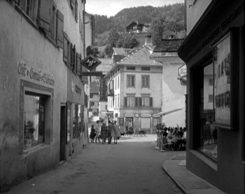

|
|
HELP FIND THE FOLLOWING SWISS AND AUSTRIAN LOCATIONS
PAGE 202
THE BARON:
And Suddenly You're
Dead (Cyril Frankel: January 1966)
Unknown 1
– John Mannering and Cordelia
Winfield
are in Switzerland
on business.

Unknown 1 - Establishing shots Alps on flight into Switzerland.
Unknown 2 – A Heibeck street.

Unknown 3 - First train in the morning to Heibeck.


DANGER MAN:
A Room in the Basement
(Don Chaffey:
1964)


Think you know a spot? Need a bigger image? Email me.
< Previous | Index | Avengerland | Next >
Copyright © 2023 Anthony R. McKay